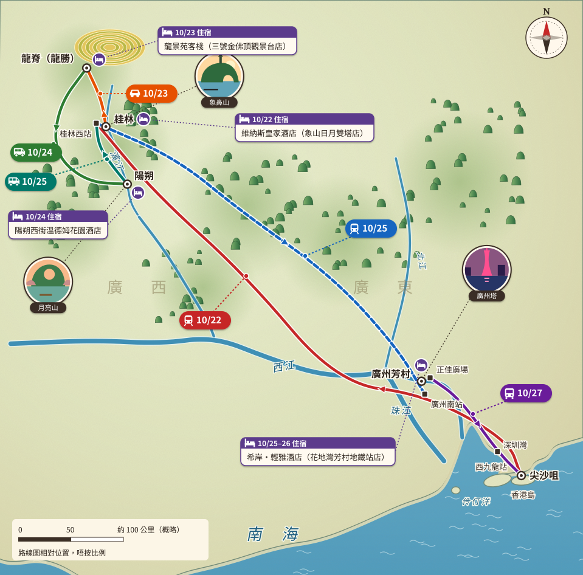
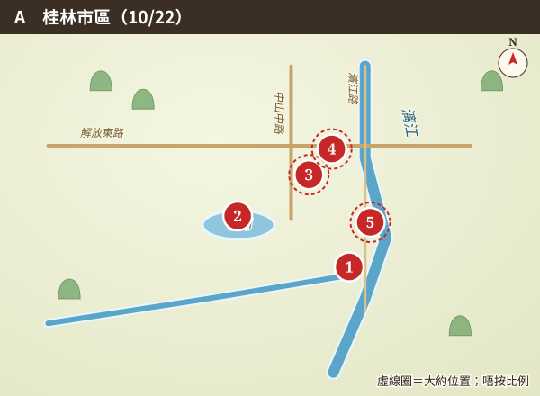
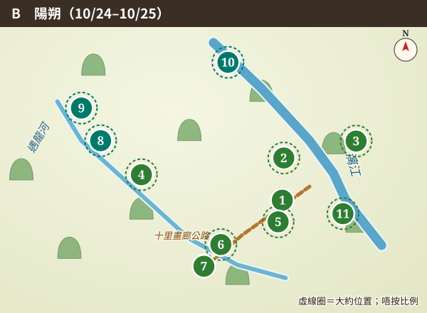
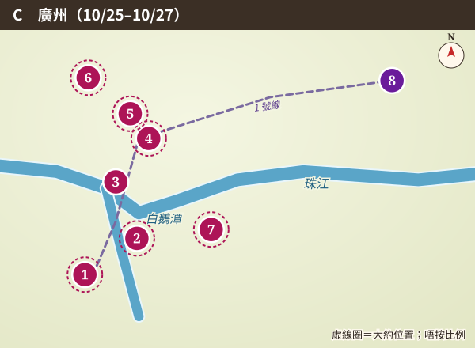
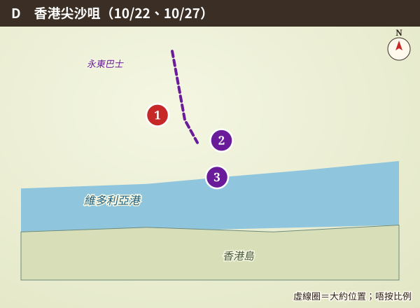
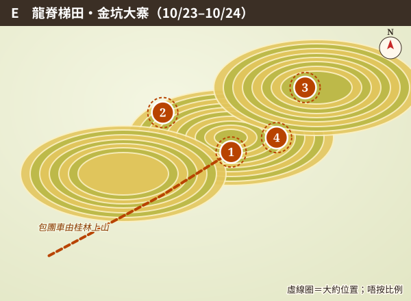
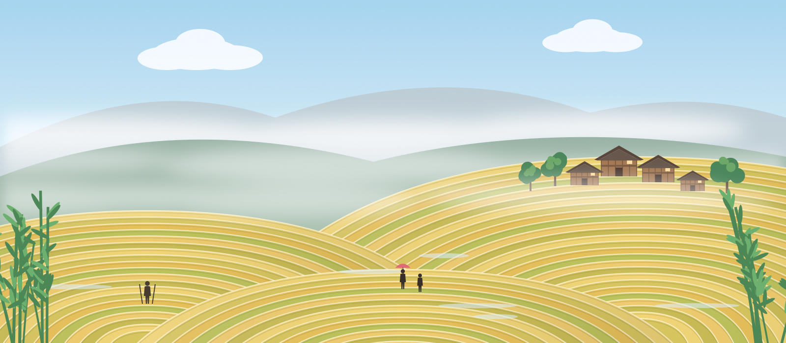
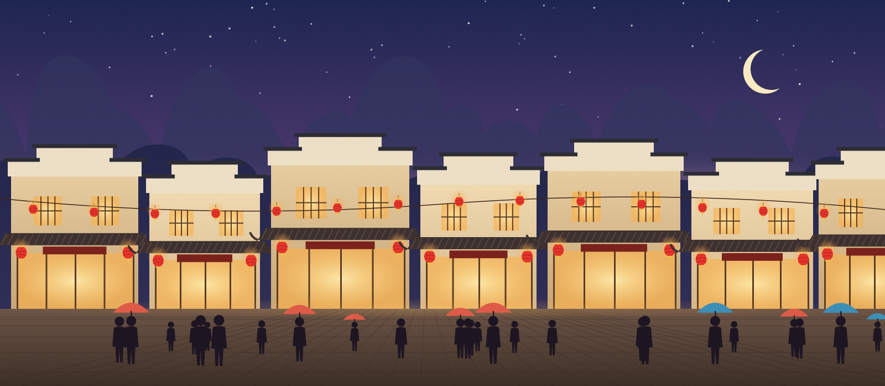
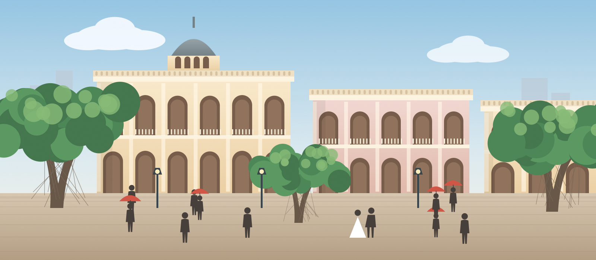

六日・兩省・一條路線
路線總覽
頭三晚喺廣西：第一晚住象山日月雙塔旁邊，第二晚上山住龍脊梯田客棧，第三晚落腳陽朔西街。第四日下晝由桂林西搭高鐵去廣州南，之後兩晚以芳村為基地。最後一日喺體育西路正佳廣場上永東巴士返尖沙咀，19:30 準時上堂。
天氣：中國天氣網 2026-10-16 嘅中期預報話 10/23 有雨、10/24 雨轉多雲，記得帶遮；出發前再睇一次。
GUILIN 25.27°N 110.29°E → GUANGZHOU 23.13°N 113.26°E ・ 2026.10.22–10.27
搭 G918 一程北上桂林，上龍脊、落陽朔、聽縣前街民謠；再搭高鐵落廣州芳村，行沙面、望白鵝潭，最後坐永東巴士趕返香港文化中心上堂。
六日・兩省・一條路線
頭三晚喺廣西：第一晚住象山日月雙塔旁邊，第二晚上山住龍脊梯田客棧，第三晚落腳陽朔西街。第四日下晝由桂林西搭高鐵去廣州南，之後兩晚以芳村為基地。最後一日喺體育西路正佳廣場上永東巴士返尖沙咀，19:30 準時上堂。
天氣：中國天氣網 2026-10-16 嘅中期預報話 10/23 有雨、10/24 雨轉多雲，記得帶遮；出發前再睇一次。

手機可以左右捽睇全圖
主地圖上 A–E 框住嘅地方喺下面放大。數字標記顏色＝日子；虛線圈＝大約位置（出發前用地圖 App 再對）。放大圖唔按比例。





第一章
由象鼻山開始，漓江水靜靜咁流；第二日上龍脊，層層梯田好似畫出嚟嘅等高線；第三日去月亮山、十里畫廊同遇龍河，晚上就喺縣前街聽民謠。
10/22星期四・第 1 日

10/23星期五・第 2 日
10/24星期六・第 3 日

10/25星期日・第 4 日
第二章
芳村喺珠江白鵝潭西岸，一個站就過到沙面。行完西關騎樓，傍晚沿花地江邊散步，對岸燈一盞盞亮起；夜晚就去太古倉風馬民謠，聽新民謠飲一杯。

10/26星期一・第 5 日
10/27星期二・第 6 日
| 項目 | 時間 | 詳情 |
|---|---|---|
| G918 高鐵 | 10/22 10:20–13:18 | 西九龍 → 桂林西 |
| 高鐵 | 10/25 15:37–18:02 | 桂林西 → 廣州南；最遲 13:30 由陽朔出發 |
| 永東巴士 | 10/27 15:25–18:50 | 正佳廣場（西門）→ 尖沙咀中港城，HK$110；14:55 前報到；後備：可改搭 14:55 嗰班 |
| 酒店 | 10/22 | 維納斯皇家酒店（象山日月雙塔店），濱江路11號 |
| 客棧 | 10/23 | 龍景苑客棧（三號金佛頂觀景台店） |
| 酒店 | 10/24 | 陽朔西街溫德姆花園酒店，觀蓮路2號 |
| 酒店 | 10/25–10/26 | 希岸·輕雅酒店（花地灣芳村地鐵站店），荔灣區榮興路19號（芳村站步行約10分鐘） |
| 民謠酒吧 | 10/24 夜 | 陽朔縣前街：小馬的天（28號）、旅行記憶（24號） |
| 民謠酒吧 | 10/25、10/26 夜（可選） | 風馬民謠（太古倉店），海珠區太古倉54匯；人均約 ¥134（用戶截圖，2026-10） |
價錢單位：¥ = 人民幣，HK$ = 港幣；資料日期 2026-10-16。標 待核實 嘅項目出發前要再確認。